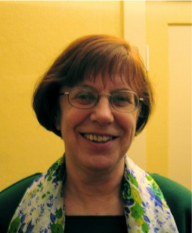

Astrid Bartel
Astrid Bartel wurde 1945 in Hermannstadt/Sibiu (Rumänien) geboren. Nach Abitur
Studium in Temeswar/Timișoara (Rumänien). Mit der Familie 1965 nach Deutschland
gekommen. Studium der Germanistik und Geografie in Köln. Nach Abschluss des
Studiums seit 1975 in Berlin. Verwitwet, vier Söhne.
Sie veröffentlichte ihr erstes Buch „Das Mädchen von der Quelle - Geschichten
um Roma und Sinti" 2005 im hora-Verlag, Hermannstadt (Sibiu). Im gleichen
Verlag erschien 2007 ihr zweites Buch „Der halbierte Stalin - Hermannstädter
Geschichten.“
Nach der Veröffentlichung der Bücher fanden in Rumänien und Deutschland
(Stuttgart, München, Berlin im Roten Rathaus, Schulen, Buchhandlungen…) viele
Lesungen statt. Es zeigte sich, dass bei weitem nicht nur Siebenbürger von den
ihnen aus der Heimat vertrauten Textinhalten angetan waren, sondern ebenso die
hiesigen Leser. Diese empfanden die für sie so fremdländisch anmutenden
Protagonisten als etwas Bereicherndes und Ungewohntes, und so kam es nach der
Lesung oft zu Diskussionen und Fragen verschiedenster Art.
Bei dem dritten Buch „Dem Leben verpflichtet“ geht es um einen Roman nach dem
wahren Leben eines siebenbürgischen Frauenarztes. In Hermannstadt (Sibiu)
geboren, als die Stadt noch zu Österreich-Ungarn gehörte, später dann zum
Königreich Rumänien und zuletzt zur Volksrepublik Rumänien, war es für ihn ein
Leben in drei Gesellschaftsordnungen. Nach Enteignung und Arbeitsverbot stellt
sich für ihn am Ende die Frage: Soll er in der geliebten Heimat bleiben oder
in die BRD auswandern, wiederum ein neues Gesellschaftssystem.
Nun ist das vierte Buch „Des Lebens ungeteilte Freude“ erschienen.
Hierbei handelt es sich um eine Sammlung von Erzählungen mit autobiografischen
Zügen. Es ist aber keine Autobiografie, denn die Autorin tritt meist in den
Hintergrund der Erzählungen, lässt die Handlung vielmehr von andern
Protagonisten vorantreiben. Diese agieren im Untersuchungsgefängnis Moabit; in
einer Studentenkneipe; auf dem Kurfürstendamm; während eines Verhörs bei der
Kripo; in Dörfern und Städten Rumäniens und Deutschlands; auf einem Friedhof;
in einem Dorf Mecklenburgs direkt nach der Wende; in einem Wohnhaus, in dem
viele Nationen leben und auch ein von ihnen enttarnter Spitzel…
Es sind wahre Erlebnisse, mitten aus dem prallen Leben, die beim Leser lange
nachwirken, ihn erheitern oder ihm zu denken geben.
E-Mail: mail@astridbartel.de
